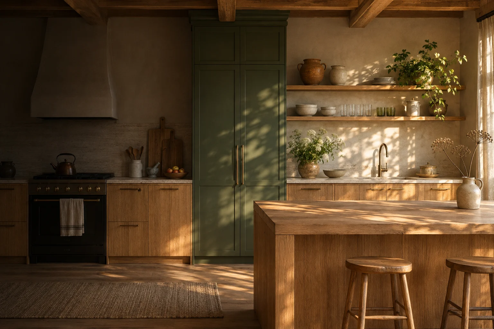

Натуральный дуб и олива
Материалы
Три характера дерева
Одна форма фасада меняется от породы и отделки. Выберите образец для своей кухни.
Проект кухни
Тихий дом
У окна — длинная рабочая поверхность. Напротив — остров, за которым можно готовить вдвоём. Высокий шкаф собрал запасы в одном месте, поэтому стену над мойкой удалось оставить открытой.
- Планировка
- Прямая с островом
- Фасады
- Дуб и оливковая эмаль
Задание мастеру
А какая у вас кухня?
Выберите планировку и укажите примерные размеры. Получится короткий файл, с которого удобно начать разговор о стоимости.